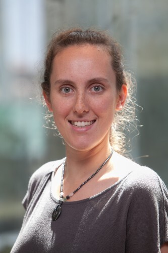

About Me

After growing up in Philadelphia, I attended Saint Joseph’s University, where I earned a B.S. in Mathematics and in Computer Science. At SJU, I lived with Kathleen Vaccaro for four years. She now has an MFA from Pratt!
I earned my PhD in Computer Science from Duke University. In my second year of graduate school, my adviser (Herbert Edelsbrunner) told me he was offered a position at IST Austria. So, our research group moved to Klosterneubug, Austria (near Vienna), and I lived (mostly) in Austria for three years.
After earning my PhD, I was a postdoc for three years: one year at CMU and two years at Tulane University. At CMU, I was one of the co-founders of topstat, a research group with whom I still collaborate. At Tulane University, working with Carola Wenk. We’re working on road network construction and comparison.
In my spare time, I love to run and to play lacrosse. I even played with the Vienna Cherokees in Austria!